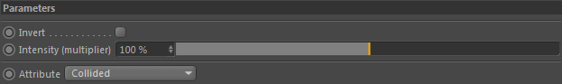
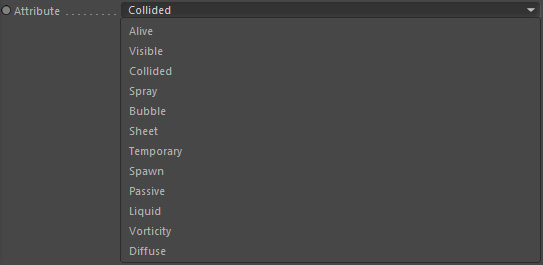

Parameters
Parameters

Attribute

Attributes describe a certain state the particle is in. So the attribute is either true or false.
These are the available attributes this constraint can read out from the particle currently processed by the caller node (see description on top).
Alive - the particle is alive. Is false if it died.
Visible - the particle is visible.
Collided - the particle has just collided.
Spray - this particle is a diffuse spray particle
Bubble - this particle is a diffuse bubble particle
Sheet - this particle is a thin sheet particle
Custom - this is a custom particle attribute and can be used by the user arbitrarily ( For example by a plugin or in Xpresso if you wanted to store a state in a particle you could set this attribute)